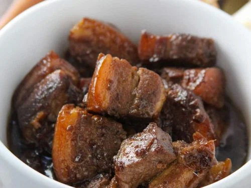

Adobong baboy

Description
Pork in a tasty Adobo sauce is great smothered over white jasmine rice!
Ingredients
- 1 cup distilled white vinegar
- 1 cup soy sauce
- ½ cup ketchup
- 1 tablespoon minced garlic
- 3 bay leaves
- 1 teaspoon fresh-ground black pepper
- 2 ½ pounds lean pork, cut into 1 inch cubes
- 1 pound small green beans, trimmed (Optional)
Steps
- 1. Stir together the vinegar, soy sauce, ketchup, garlic, and bay leaves in a large saucepan. Add the cubed pork,
and bring to a boil over high heat. Reduce heat to medium-low, cover, and simmer until the pork is tender,
about 2 1/2 hours. Stir occasionally. If using the green beans, add them during the last half hour of cooking.